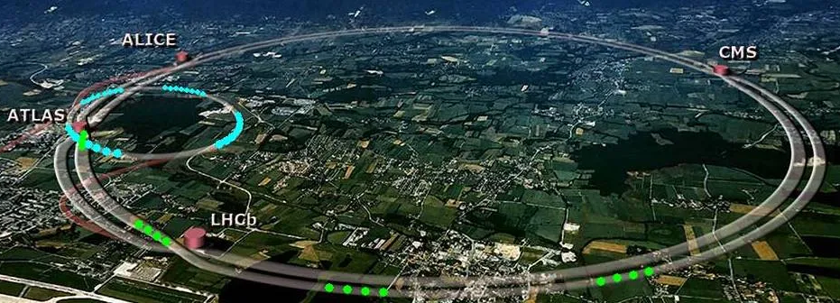
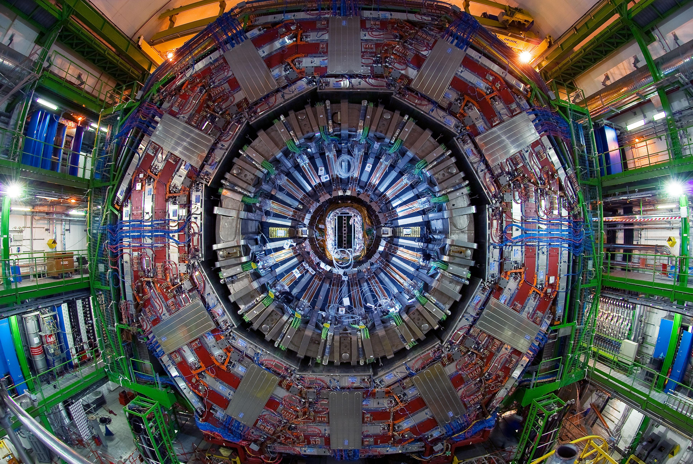

Physics Analysis and Detector Research at CMS


Precision measurements and searches for physics beyond the Standard Model
- Multidimensional differential Drell–Yan cross section measurements
- High-mass neutral- and charged-current Drell–Yan measurements
- Searches for excited leptons in the ℓℓγ final state
- Development and maintenance of the CMS muon high-level trigger (HLT)